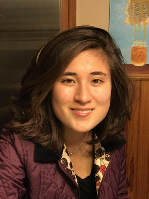

foster the respectful exchange of beliefs all over the political spectrum...

and connect individuals across diverse communities who are interested in civic leadership and political engagement.
What we do
Chapter meetings
Before the Unruh Institute's Tuesday evening Ground Zero events, Associates meet biweekly to host intimate Q&As with panelists and update members on Associates' upcoming programming.
Lunches with Leaders
We host lunches on week days each semester to give Associates a chance to meet face-to-face with prominent political professionals in a more informal setting at the Unruh Institute or the University Club.
Roundtable Discussions
Associates host intimate roundtable discussions each semester on topics ranging from the Supreme Court, to nuclear proliferation, to environmental policy to give Associates a chance to discuss the prominent issues of the day in a civically engaged setting.
Downtown Los Angeles Summit
Every semester, Associates head to Los Angeles City Hall to meet with public and private sector professionals. The trip includes a tour of City Hall, panels hosted in the Tom Bradley Room, and networking sessions. If you have a strong desire to work in politics, this is an excellent opportunity to learn more about career opportunities and make an impression with those working in politics today.
Internships through the Unruh Institute
By becoming a part of Unruh Associates you demonstrate your commitment to political advocacy, on campus and off. The Unruh Institute, our parent organization, recognizes this and invites you to apply for interships here.
Special Events, Competitions, and Programs
Unruh Associates leads a number of other student-run events and intiatives, from leading USC's efforts on National Voter Regisration Day to holding audience spots for Associates at CNN Town Halls. As the nature of politics and government is in a constant state of change, we always consider new ways of expanding our intiatives on campus.
Who We Are
The following executive board members were elected for the 2018 calendar year:
Eleonora Viotto, President
Eleonora Viotto is a sophomore from Seattle, Washington double majoring in Political Science and communications with a minor in History. She is honored to be serving as the President of the Unruh Associates for 2018. Previously, she has served as the Director of Programming for the Unruh Associates and worked as the VP of External Relations for Phi Alpha Delta Fall 2017. She currently works as a Resident Assistant for the New North Residential College, as well as a member of the Unruh Institute student staff. Eleonora has previously interned at the Pluvious Group in Downtown Los Angeles as well as volunteered with Rep. Dave Reichert’s (WA-8) office. Most recently, Eleonora interned with Blue Wave Politics in Seattle, WA, working on Maria Cantwell’s re-election campaign, Jenny Durkan’s bid for Seattle Mayor, as well as a variety of local and state races. On campus, she is a Presidential Scholar and a member of the Trojans Scholars Society, as well as a member of the Political Science Honors program for freshmen and sophomores. Eleonora is also a staff writer and copy editor for the Daily Trojan, as well as a member Model UN team at USC. After graduating from USC, she plans on attending law school and studying corporate law.
Oskar Muller, Vice President

Oskar Müller is a sophomore from River Forest, Illinois. He is majoring in Economics, and minoring in Political Science with an emphasis in Law and Public Policy. He currently serves as Vice President for the Unruh Associates student group. He is an active member of the on-campus outdoor adventure group SC Outfitters. In addition to his employment as Unruh student staff, Oskar previously interned for NationBuilder, volunteered for Kathryn Barger’s campaign for Los Angeles County Supervisor, and still serves as a courier for Postmates. Oskar is one of four students selected to participate in the Action Civics Program provided by the Unruh Institute of Politics, in which he leads an after-school program that emphasizes political participation and civic engagement in high school students. When he is not immersed in political work, Oskar enjoys camping and hiking all around the country, and is also an avid musician. He hopes to pursue a career as a political consultant after obtaining his undergraduate degree. If you wish to contact Oskar, you can e-mail him at omuller@usc.edu.
Srividya Dasaraju, Director of Programming

Srividya Dasaraju is a sophomore from Topeka, Kansas majoring in International Relations. Her academic interests include security and terrorism studies, international law, and the politics of climate change. Last summer Srividya interned for Senate Minority Chuck Schumer in DC. She has also previously interned for the Kansas Democratic Party. On campus, she is on the Trojan Policy Debate Team, an associate editor for the Journal of Law and Society, a contributor to Glimpse from the Globe, a member of Phi Alpha Delta, and Campus Events co-coordinator for SCIA. Srividya is also a research assistant for Professor Markowitz in the Security Political Economy Lab where she helps research the relationship between Arctic resource competition and states’ power projection. Upon graduating, she hopes to attend law school, later entering the field of defense policy.
Misa Buscemi, Director of Publicity
Misa Buscemi is a sophomore from Buffalo, NY, double majoring in Political Science and Public Relations. She has previously interned for Senate Minority Leader Chuck Schumer and volunteered on the reelection campaign of Mayor Byron Brown in Buffalo, NY. She is passionate about journalism and credible reporting in the current political climate. She works as a journalist in the USC Annenberg Media Center on a project that attempts to inform students on how to stay civically engaged. She is also a member of Phi Alpha Delta, USC’s Pre-Law fraternity. In the future, she hopes to attend law school and work on political campaigns.
Celia Garth, Director of Internal Relations

Celia Garth is a sophomore from Rochester, NY, double majoring in Political Science and Public Relations. She has interned at Community Foundations Leading Change, a national network of community foundations that offers programs and resources to develop community leadership, and the Monroe County Democratic Committee. On campus, she works at the Thornton School of Music, Music Operations Office and is a member of USC’s Pre-Law Fraternity, Phi Alpha Delta. Additionally, Celia is member of USC WYSE (Women and Youth Supporting Each Other) where she serves as a mentor and teacher of an after-school program devoted to empowering middle school girls.
Alix Olliver, Director of Finance

Alix Ollivier is a Junior majoring in Political Science. Originally a Computer Science student, he decided to move over to Political Science when the current political climate grew interesting. He just finished his first semester as a Political Science student, interning at City Hall with Councilmember Mike Bonin, known for his efforts on combating homelessness, developing walkable streets and public transit systems. On campus, he volunteers at Liberty for North Korea and enjoys meeting at the Secular Humanists club. He hopes to one day be able to move to DC and fulfill his newfound dream of joining the swamp.
Jose Gutierrez, Director of External Relations

José Gutiérrez is a sophomore, pursuing a Political Science and Philosophy double major with a minor in Behavioral Economics, and an international student from Mexico City. After interning at Fundación ProEmpleo Distrito Federal, an NGO and business incubator that fosters Mexican entrepreneurship, José was inspired to explore civic engagement and advocacy. Hence, he joined Undergraduate Student Government as an advocacy delegate and founded defrACT, a student organization that produces public art installations on contemporary social issues, for which he serves as Co-President. José also teaches civics at a local high school through the Unruh Action Civics, Civic Engagement program. He also interned at the Mexico City office of Korn/Ferry International, one of the best international headhunting firms. Previously, José was a trumpet player in the “greatest marching band in the history of the universe (ever)!” which is naturally USC’s own Spirit of Troy. In the future, José hopes to work in a think tank, urban development and be a writer during his spare time (which really means he has no real clue what he wants to do).
Adam Grushan and Sophie Greensite, Senior Advisers


Adam Grushan and Sophie Greensite served on the inaugural Associates Executive Board as Vice President and Director of External Relations respectively. Jointly, they revamped the admissions process to drive engagement, managed a new event schedule to better connect students with mentors in politics, and moderated regular panels and roundtables on a range of issue areas. Adam is a senior double majoring in Economics and Political Science, and Sophie is a senior studying Political Economy. After graduation, Adam will be consulting on financial, economic and accounting damages issues as an associate at TM Financial Forensics, and Sophie, who currently interns in the talent management space, hopes to work as a talent agent.
Apply
Applications are now available!
What We’re Looking For
Unruh Associates is open to all undergraduate students of all majors currently pursuing degrees at USC. We’re interested in driven, student leaders who want to make a difference in the political arena. This interest may be demonstrated through academic work, attending and/or organizing political events, prior political volunteerism, political internships, and politically-related activities whether it be political punditry, issue advocacy, or translatable skills. An Unruh Associates is someone who is tolerant and open-minded, willing to learn about new topics and hear different viewpoints, and ready to jump into the conversation. We are looking for people who are engaged or looking to be engaged in the community, and are enthusiastic about Unruh Associates and its mission.
Frequently Asked Questions
What is the application process?(1) You must attend the Unruh Open House in SOS B15 on January 17, 2018 at 5:30 PM. If you cannot attend this event, please reach out to our executive board at unruhassociates@gmail.com and we can accommodate your application.
(2) The written application opens January 18, 2018 and is due January 23, 2018 at 5:00 PM.
(3) An individual interview conducted sometime between January 24-25, 2018.
Applicants will be notified of their application status after the written application and interview rounds. Shortly after the interviews we will welcome our new members!
How long is the application process?The application process takes about 7 days from the written application due date on January 23, 2018 to final decisions.
What if I’m a freshman or have recently become interested in politics?We want you to apply, whatever your experience level in politics. Your application is welcomed as long as you’re interested in politics / civic engagement, want to learn more about what a career in politics looks like, or are passionate about connecting with other politically minded students.
Is Unruh Associates partisan? Do we subscribe to one party’s vision of the country?Nope! We are a nonpartisan organization and invite students of all political persuasions to apply.
Do you have to be political science major to apply?Nope! We want you to apply, whatever your major, school, or interest. We have members from many schools at USC, and our members have a wide variety of skills and interests.
What if I have a different question?Great! Shoot us an email @ unruhassociates@gmail.com, and we’ll get back to you ASAP.
We want you here! Joining Unruh Associates is your opportunity to connect with political professionals through on-campus events and off-campus summits and foster civic discourse through impactful student-run events and initiatives.
Get in touch
Feel free to reach out with any questions.
-
Email us at:
unruhassociates@gmail.com -
Social:
-
Find the Unruh Institute, our parent organization at:
3502 Trousdale Parkway
Social Sciences Building B15
Los Angeles, CA 90089
-
And contact the Institute at:
(213) 740 - 8964and unruhins@usc.edu